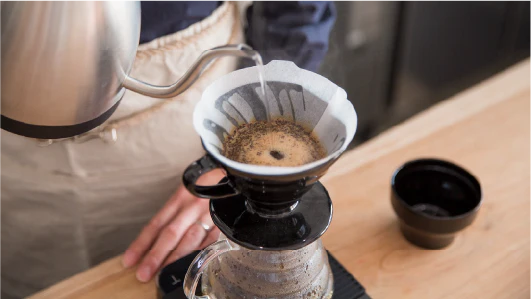
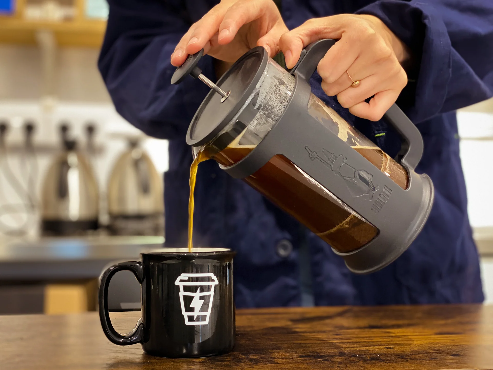
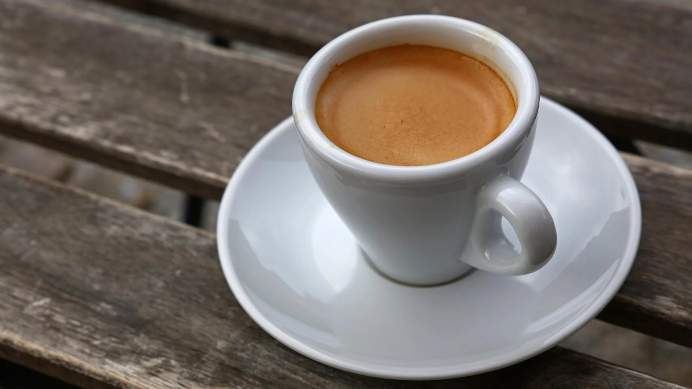
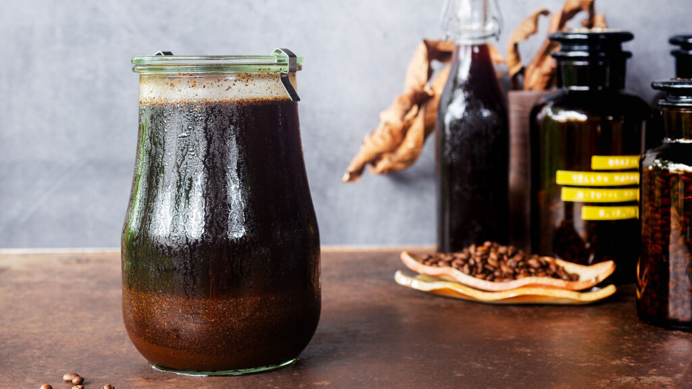

Brewing Tips
Hello Username
Master simple methods for creating the perfect cup of coffee — every time.

☕ Pour Over (V60)
- Use a medium-fine grind with a 16:1 water-to-coffee ratio.
- Rinse the filter, add grounds, and let them bloom for 30 seconds.
- Pour water slowly in circles — total brew time: 2.5–3 minutes.
Tip: Perfect for delicate single-origin beans with fruity notes.

☕ French Press
- Grind coarse and use a 12:1 water-to-coffee ratio.
- Steep for 4 minutes, then press slowly and serve immediately.
- Decant into another container to prevent over-extraction.
Tip: Ideal for rich, full-bodied blends like our Desert Camp Espresso.

☕ Espresso
- Use a fine grind and tamp evenly. Dose about 18g for a double shot.
- Extract for 25–30 seconds, aiming for around 36ml yield.
- Adjust grind and pressure to control strength and flavor.
Tip: A great way to taste the bold character of Robusta-rich blends.

☕ Cold Brew
- Combine coarsely ground beans with cold water in a jar.
- Steep in the fridge for 12–16 hours, then strain.
- Serve over ice with a splash of milk or syrup.
Tip: Naturally sweet, less acidic, and perfect for Bahrain’s summer heat!